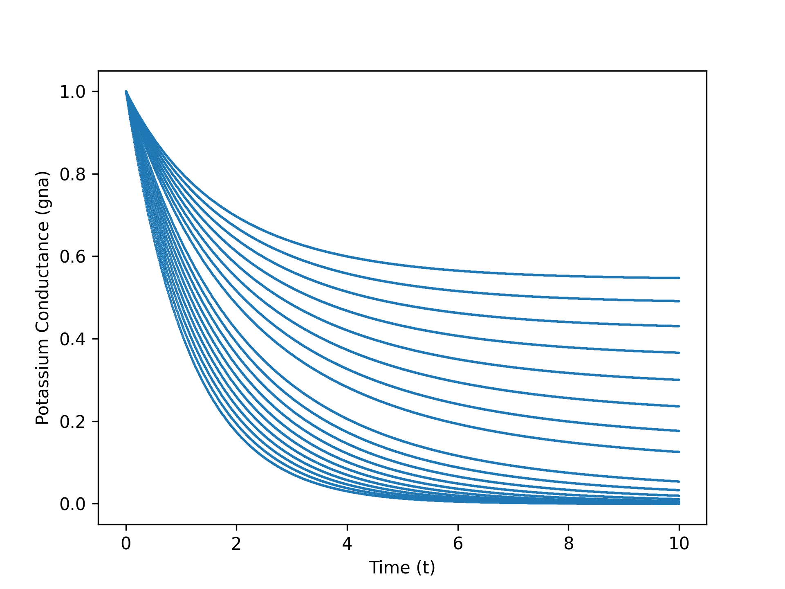
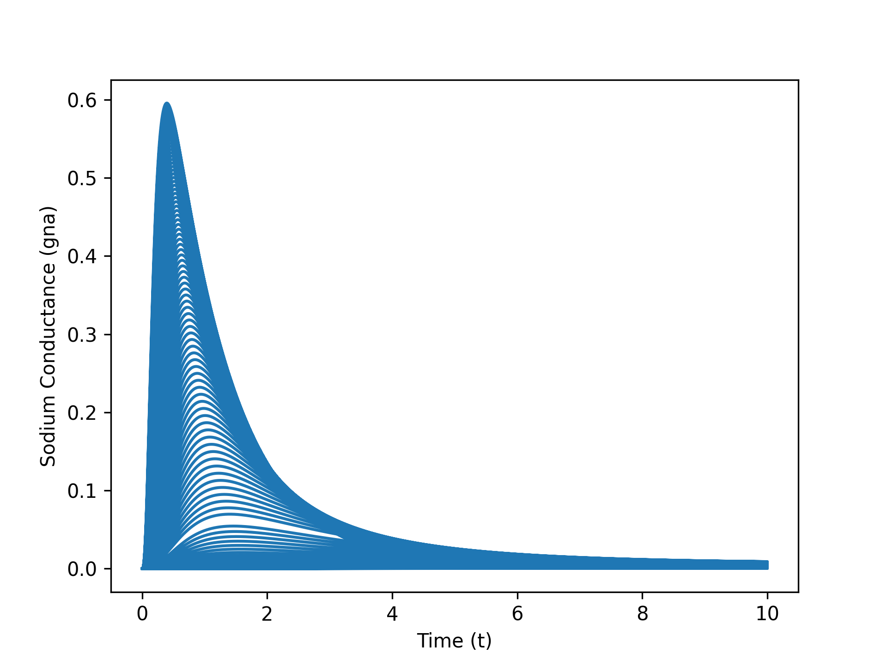

Modelling Brain Waves
The Action Potential

The Hodgkin-Huxley model revolutionized our understanding of neurons by mathematically modeling the generation and propagation of action potentials. Developed by Alan Hodgkin and Andrew Huxley in the 1950s, the model represents a neuron as an electrical circuit with ion channels acting as variable resistors. These ion channels, specifically for potassium (K+) and sodium (Na+), are key to the electrical activity in neurons.
Potassium Conductance
Sodium Conductance
Key Concepts
- Neuron Function: Neurons transmit signals using electrical impulses, largely driven by the movement of ions across their membranes. This process is modeled using differential equations that describe changes in voltage over time.
- Action Potentials: When a neuron is stimulated, a rapid change in voltage (depolarization) occurs due to the influx of Na+ ions, followed by repolarization through the efflux of K+ ions. This electrical impulse travels along the neuron, transmitting information
- Voltage Clamp Experiments: Hodgkin and Huxley’s experiments with voltage clamps helped them quantify the ion currents and derive the conductances of sodium and potassium ions, forming the basis of their mathematical model.
This work involved implementing and exploring the Hodgkin-Huxley model to simulate the electrical activity of neurons. The project began by studying the mechanisms by which neurons generate and propagate action potentials, focusing on the role of sodium and potassium ion channels in regulating ion flow across the membrane. These biological processes were then translated into the mathematical framework established by Hodgkin and Huxley, whose differential equations describe how the conductance of these ions varies with changes in voltage.
Numerical simulations were developed using Python to solve the Hodgkin-Huxley equations. The Runge-Kutta method was applied to model the sodium and potassium conductances over time. This approach allowed for visualizing the behavior of these ion channels under different voltage conditions, demonstrating how action potentials are generated and propagated within a single neuron. The simulations provided insight into the electrical dynamics of neuron signaling.
In addition to modeling single neurons, the study extended the Hodgkin-Huxley model to simulate signal propagation across neural networks. Using the NEURON simulation environment, action potentials were propagated through a series of connected neurons, illustrating the process of synaptic transmission with time delays between each neuron in the chain. This demonstrated how electrical signals are communicated between neurons in a network.
Further analysis included the FitzHugh-Nagumo model, a simplified version of the Hodgkin-Huxley model. This alternative model, with fewer computational demands, was used to compare the efficiency and performance of different approaches, particularly when modeling larger neural networks. The limitations of the Hodgkin-Huxley model were also examined, such as its reliance on data from squid neurons and its deviation from the "All-or-None" principle, while discussing potential extensions to the model to accommodate more complex neuronal behavior.
Github link: https://github.com/AHawkridge/Hodgkin_Huxley_Brain_Functions